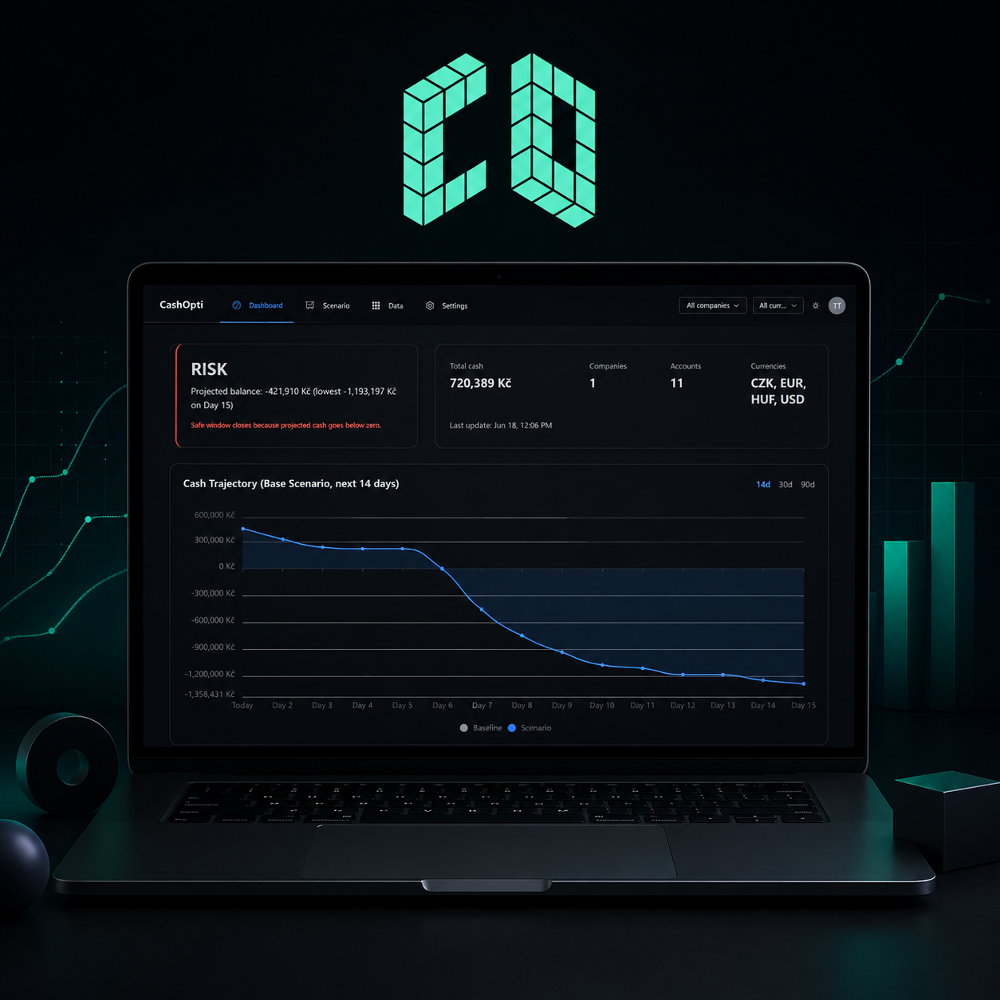

01
Cash Optimizer
Spin-off of Dype.cz
Kontext: Dype.cz, moderní finanční oddělení pro startupy a scaleupy, mělo nápad a jednoduchý prototyp nástroje pro optimalizaci cashflow malých a středních firem, ale chyběly mu zkušenosti a interní kapacity pro vytvoření celého produktu.
Moje zapojení: Převzal jsem návrh a vývoj produktu od prototypu po MVP.
Výsledek: Během tří měsíců jsme postavili MVP a začali testovat na reálných zákaznících. Dlouhodobou vizí Cashopti je autonomní řízení cashflow s využitím AI, včetně inteligentního úvěrování a investování kapitálu.
